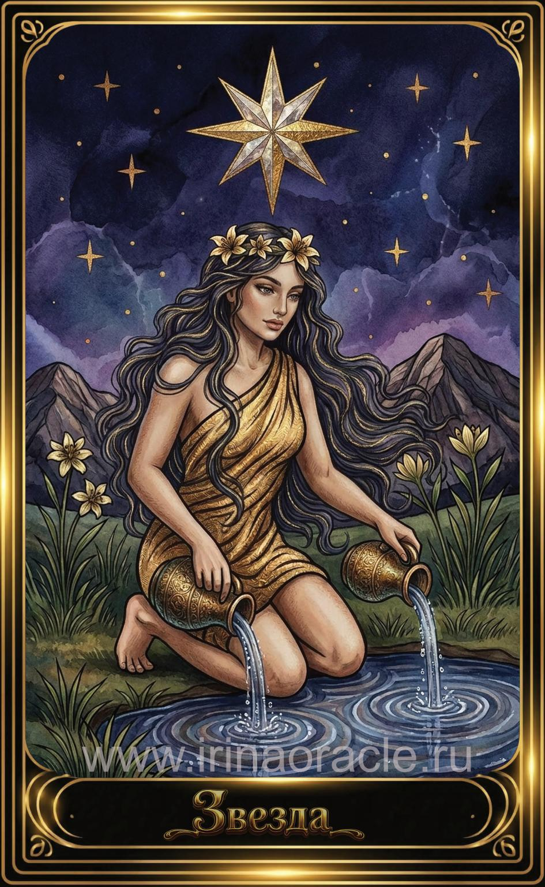

Звезда — значение карты Таро
Звезда — значение карты Таро

Звезда — это карта надежды, вдохновения и внутреннего света. Она приходит после Башни, чтобы напомнить: даже после разрушений путь освещён, и впереди — исцеление и обновление. Это энергия чистоты, веры, спокойствия и доверия жизни.
Общее значение
Звезда указывает на период восстановления, вдохновения и ясности. Это карта, которая говорит: ты на правильном пути, даже если движение медленное. Она приносит гармонию, лёгкость и ощущение внутреннего руководства.
Это время, когда важно верить в себя и следовать своему свету.
Любовь и отношения
В любви Звезда говорит о чистоте чувств, искренности, доверии и спокойном развитии. Это отношения, основанные на уважении, вдохновении и душевной близости.
В тени — идеализация партнёра, уход в мечты или ожидания, которые не совпадают с реальностью.
Работа и финансы
В работе Звезда указывает на вдохновение, творческие проекты, ясное видение и поддержку высших сил. Это благоприятное время для планирования, обучения и мягкого роста.
В финансах карта говорит о стабильности, постепенном улучшении и правильном направлении.
Здоровье
Звезда указывает на исцеление, восстановление, гармонизацию процессов и улучшение эмоционального состояния. Это карта мягкого, но глубокого оздоровления.
Иногда она говорит о пользе водных практик, отдыха и расслабления.
Совет карты
Доверься пути. Следуй за своим внутренним светом. Звезда советует сохранять спокойствие, верить в лучшее и не торопить события — всё развивается гармонично.
Это время вдохновения, ясности и духовного роста.
Теневая сторона
В тени Звезда проявляется как иллюзии, мечтательность, уход от реальности или вера в недостижимое. Иногда — как потеря ориентира.
Карта напоминает: вдохновение должно сочетаться с реальными шагами.